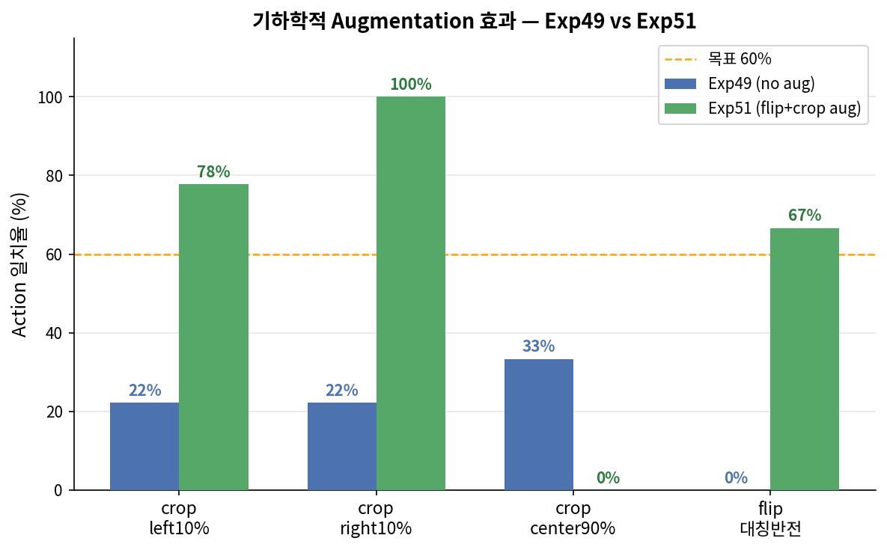

Exp50(flip augmentation 학습)과 Exp51(crop augmentation 학습)의 각 augmentation 조건에서 robustness 차이.

| 조건 | Exp50 (flip aug) | Exp51 (crop aug) | 변화 |
|---|---|---|---|
| 원본 | 100% | 100% | 0% |
| 밝기 +40% | 78% | 78% | 0% |
| 밝기 -40% | 89% | 89% | 0% |
| 대비 +40% | 67% | 100% | +33% |
| 대비 -40% | 78% | 89% | +11% |
| 블러(σ3) | 44% | 78% | +33% |
| 블러(σ6) | 22% | 22% | 0% |
| 좌측 crop 10% | 22% | 78% | +56% |
| 우측 crop 10% | 33% | 100% | +67% |
| 중앙 crop 90% | 11% | 0% | -11% |
| 색상 지터 | 89% | 100% | +11% |
| 수평 반전 | 67% | 67% | 0% |